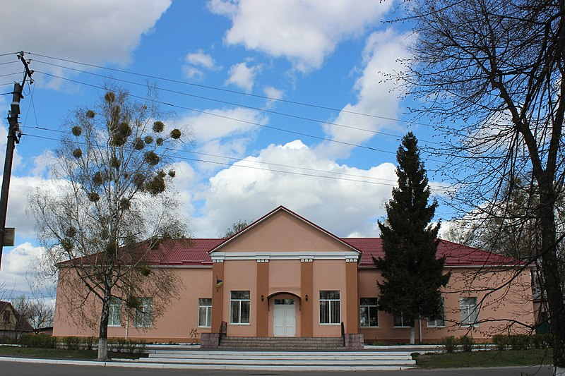

Назва: село Катюжанка
Статус: село Вишгородського району,
Димерська об'єдана територіальна громада.
Розташування: 47 км від м. Київ
Населення: 4 450 чоловік.
Площа: 694,46 га. Водойми: р.Здвиж .
Перша писемна згадка про село датується кінцем XVI століття.
Історична довідка: За переказами його заснував розбійник на прізвисько Катюга. Катюга спочатку був поважним мешканцем сусідного села Димер. Але "... зв'язався с поганим товариством та й покотився ... ". Сколотивши банду Катюга промишляв розбоєм. Жителі Димера не стерпіли такого сусіду й примусили його залишити містечко, та той далеко не втік. Неподалік від Димера він заснував хутір, з якого згодом і виросло село Катюжанка.
У 1921р. в Катюжанці була встановлена радянська влада.
У 1931р. в селі було створено колгосп.
На поточний час на території села діють Катюжанська спеціалізована школа І - ІІІ ступенів, дитячий садок "Лелеченя", Вище професійне училище, медична амбулаторія, лісові господарства, Будинок культури, мережа торгових закладів.
P.S.Зауваження від дописувачів Григорія Алєксєєнко та Сергія Орлова.
Згідно польських джерел відома дата заснування Катюжанки :
Котюжанка (том IV, 492 та том III. 909 Катюжанко), село,
Київський район, громада с. Димер, поштове відділення
Борщагувка (45 ст.), 53 ст. З Києва, 276 дм., 1614 м.
Кв. (2 католики, 210 євреїв), 2002 р.
Церква, церковний дитячий садок , млин.
Поселений на початку XVI ст. у 1622 р.
Разом із Диміром о. Острозького.
Kotiuzanka (t. IV, 492 i t. III. 909 Katiuzanko), ws, pow kijowski,
gm. Dymer, st. poczt. Borszczahowka (45 w.), 53 w. od Kijowa,
276 dm., 1614 mk. (2 kat., 210 zydow), 2002 dz. wlosc.,
cerkiew, szkolka cerk. mlyn. Osiedlona na poczatku XVI w.
w r. 1622 z Dymirem, ks. Ostrogskich.
Посилання на джерело :
http://dir.icm.edu.pl/pl/Slownik_geograficzny/
Хмарка тегів : Громадський сайт , село Катюжанка , Вишгородський район , Київська область , Україна , 07313 , Інтернет-довідник.